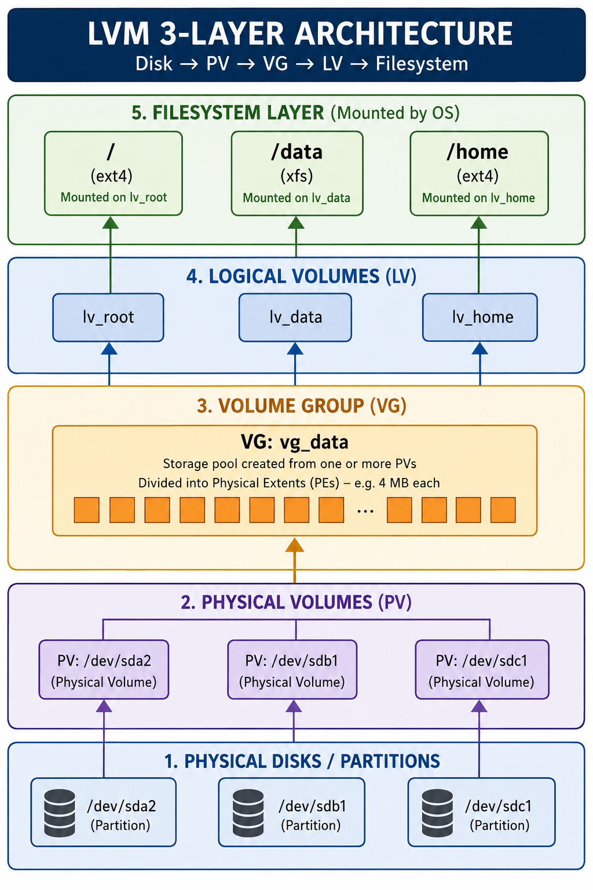

Section Coverage
lsblk, fdisk, parted, blkid, df, du — block device inspection, partitioning, filesystem space. Plus mkfs, mkswap, fsck, e2fsck, mount, umount, /etc/fstab, and complete LVM lifecycle.
Interview Relevance
Disk management questions appear in every SRE, DevOps, and cloud infra interview. Expect questions on disk full scenarios, LVM expansion, mounting NFS/EBS volumes, and partition creation.
Production Warning
Several commands (fdisk, mkfs, dd, lvreduce) are destructive and irreversible. The guide highlights danger zones clearly — crucial for safe production operations.
lsblk reads the /sys virtual filesystem to list all block devices (hard drives, SSDs, NVMe, USB drives, LVM volumes, RAID arrays) in a hierarchical tree. It's the fastest, safest way to get a full picture of storage topology without any disk access.
In DevOps and cloud engineering, lsblk is the first command run after attaching a new EBS volume, NVMe disk, or SAN LUN — to confirm the kernel has recognised it and to identify its device name before partitioning or formatting.
lsblk [OPTIONS] [device...]
device — Optional: restrict output to specific device (e.g., /dev/sda)
OPTIONS — Flags controlling output format and columns| Flag | Description | Example |
|---|---|---|
| -a | Show all devices including empty ones | lsblk -a |
| -f | Show filesystem type, UUID, and mount point | lsblk -f |
| -o COLS | Specify output columns | lsblk -o NAME,SIZE,TYPE,MOUNTPOINT |
| -p | Print full device paths (/dev/sda1 not sda1) | lsblk -p |
| -n | No header line (clean for scripting) | lsblk -n |
| -d | Don't print partitions — disks only | lsblk -d |
| -e LIST | Exclude device types by major number | lsblk -e 7 (exclude loopback) |
| -J | JSON output (for automation) | lsblk -J | jq '.blockdevices' |
| -b | Print sizes in bytes | lsblk -b -o NAME,SIZE |
| -s | Inverse — show device dependencies (slaves) | lsblk -s /dev/sda1 |
# Default tree view — most useful daily command
lsblk
# NAME MAJ:MIN RM SIZE RO TYPE MOUNTPOINT
# sda 8:0 0 100G 0 disk
# ├─sda1 8:1 0 1G 0 part /boot
# ├─sda2 8:2 0 20G 0 part /
# └─sda3 8:3 0 79G 0 part /data
# sdb 8:16 0 500G 0 disk ← NEW unformatted disk
# Show filesystem info — UUID needed for /etc/fstab
lsblk -f
# NAME FSTYPE UUID MOUNTPOINT
# sda1 ext4 a1b2c3d4-... /boot
# Custom columns — most informative for storage planning
lsblk -o NAME,SIZE,TYPE,FSTYPE,UUID,MOUNTPOINT,MODEL# Step 1: Attach EBS in AWS console, then verify kernel sees it
lsblk
# nvme1n1 is the newly attached volume
# Step 2: Check if it already has a filesystem
lsblk -f /dev/nvme1n1
# FSTYPE blank = no filesystem yet (safe to format)
# Script: parse new unformatted disks
lsblk -dn -o NAME,TYPE,FSTYPE | awk '$2=="disk" && $3=="" {print $1}'
# JSON output for Ansible/Terraform fact gathering
lsblk -J -o NAME,SIZE,TYPE,MOUNTPOINT | python3 -m json.tool
# Find all mounted NVMe disks
lsblk -o NAME,SIZE,TYPE,MOUNTPOINT | grep nvme- New volume verification: After attaching AWS EBS, GCP Persistent Disk, or Azure Managed Disk — lsblk confirms the device name before partitioning.
- LVM topology audit: See which physical disks back which VGs and LVs in a single tree view.
- CI/CD disk provisioning scripts: lsblk -J output is parsed by Python/Ansible to auto-detect and mount available data volumes.
- Kubernetes node setup: Verify NVMe local storage is available for local-path-provisioner before joining the cluster.
fdisk is an interactive text-based partition editor. It reads and modifies partition tables on block devices — primarily MBR (Master Boot Record, max 2TB, max 4 primary partitions) and GPT (GUID Partition Table, supports disks >2TB, up to 128 partitions).
In production environments, fdisk is used to prepare raw disks before filesystem creation — carving out partitions for OS boot, swap, data volumes, and LVM physical volumes. For disks >2TB, use parted or gdisk instead.
fdisk [OPTIONS] DEVICE
Read-only (safe):
fdisk -l # List all disk partition tables
fdisk -l /dev/sda # List specific disk
Interactive (requires root):
sudo fdisk /dev/sdb # Open fdisk for /dev/sdb| Key | Description | Notes |
|---|---|---|
| p | Print partition table | Safe — read-only, do this first |
| n | New partition | Prompts for type, number, start, end |
| d | Delete a partition | DESTRUCTIVE — data loss |
| t | Change partition type | 82=swap, 83=Linux, 8e=LVM, fd=RAID |
| l | List known partition types | Shows all type codes |
| w | Write changes and exit | PERMANENT — commits to disk |
| q | Quit WITHOUT saving | Safe — discards all changes |
| m | Help menu | Lists all available commands |
| g | Create new GPT table | Destroys existing table! |
| o | Create new MBR/DOS table | Destroys existing table! |
| v | Verify partition table | Checks for errors |
# List ALL disk partition tables (most common read-only use)
sudo fdisk -l
# List specific disk
sudo fdisk -l /dev/sda
# Disk /dev/sda: 100 GiB, 107374182400 bytes
# Disk model: Virtual disk
# Device Boot Start End Sectors Size Id Type
# /dev/sda1 * 2048 2099199 2097152 1G 83 Linux
# /dev/sda2 2099200 209715199 207616000 99G 8e Linux LVM# Step 1: Identify the new unpartitioned disk
lsblk # See /dev/sdb with no partitions
# Step 2: Open fdisk on the new disk
sudo fdisk /dev/sdb
# Inside fdisk — commands to type:
# g ← create new GPT partition table
# n ← new partition
# 1 ← partition number 1
# <Enter> ← accept default first sector
# +50G ← size: 50GB partition
# n ← second partition
# 2 ← partition number 2
# <Enter> ← accept default (after sdb1)
# <Enter> ← use rest of disk
# t, 2, 8e ← set type of sdb2 to Linux LVM
# p ← print and verify before writing
# w ← WRITE and exit (permanent!)
# Step 3: Inform kernel of new partition table
sudo partprobe /dev/sdb
# or: sudo blockdev --rereadpt /dev/sdb
# Step 4: Verify
lsblk /dev/sdb- Provisioning data nodes: New bare-metal Kafka, Elasticsearch, or database servers receive raw disks — fdisk creates LVM partitions before volume group setup.
- Boot partition creation: Creating /boot and /boot/efi partitions when reinstalling RHEL/Ubuntu on physical hardware.
- Swap partition setup: Create a dedicated swap partition (type 82) on servers with memory-intensive ML model inference workloads.
parted is a more advanced partition editor than fdisk. Key advantages: supports disks >2TB, can resize partitions without data loss (for some filesystems), works in both interactive and non-interactive (scriptable) modes, and performs partition alignment verification critical for SSD performance.
In modern DevOps workflows, parted is preferred over fdisk for cloud disk provisioning scripts because it accepts commands as arguments — enabling fully automated, non-interactive partition creation in Terraform, Ansible, and cloud-init user data.
# Interactive mode
sudo parted /dev/sdb
# Non-interactive (scripted) mode — preferred in automation
sudo parted -s /dev/sdb COMMAND [ARGUMENTS]
sudo parted --script /dev/sdb mklabel gpt
-s / --script — Non-interactive: don't prompt for confirmation
-a optimal — Align partitions to optimal boundaries (SSD-friendly)| Command | Description | Example |
|---|---|---|
| Show partition table | parted /dev/sda print | |
| mklabel TYPE | Create new partition table (gpt/msdos) | parted -s /dev/sdb mklabel gpt |
| mkpart | Create a partition | parted -s /dev/sdb mkpart primary ext4 0% 100% |
| rm NUM | Delete partition number NUM | parted /dev/sdb rm 2 |
| resizepart | Resize a partition (expand end) | parted /dev/sda resizepart 3 100% |
| set NUM FLAG | Set partition flag (boot, lvm, swap, raid) | parted -s /dev/sdb set 1 lvm on |
| align-check | Verify partition is optimally aligned | parted /dev/sdb align-check optimal 1 |
| unit | Set unit (s=sectors, MB, GB, %) | parted /dev/sdb unit MB print |
# Full disk setup in ONE scriptable line (no prompts)
sudo parted -s /dev/sdb \
mklabel gpt \
mkpart primary ext4 0% 100%
sudo partprobe /dev/sdb
sudo mkfs.ext4 /dev/sdb1
# Create 3 partitions: boot (1G), swap (8G), data (rest)
sudo parted -s -a optimal /dev/sdb \
mklabel gpt \
mkpart primary fat32 1MiB 1GiB \
mkpart primary linux-swap 1GiB 9GiB \
mkpart primary ext4 9GiB 100% \
set 1 esp on \
set 2 swap on \
set 3 lvm on
# Expand last partition to fill disk (after disk resize)
sudo parted /dev/sda resizepart 3 100%
sudo resize2fs /dev/sda3 # Then grow filesystem
# Print partition table in machine-readable format
sudo parted /dev/sda print machineblkid queries block devices and prints their attributes: UUID (Universally Unique Identifier), filesystem type, partition label, and partition UUID. The UUID is a persistent identifier — unlike device names (/dev/sda1) which can change if disks are added or reordered, UUIDs stay constant.
In DevOps, blkid is the standard tool for getting the UUID before writing /etc/fstab entries. Using UUID in fstab is the production best practice — prevents boot failures from device name changes after disk additions or kernel updates.
blkid [OPTIONS] [DEVICE...]
No args — List ALL block devices with attributes
DEVICE — Query specific device only| Flag | Description | Example |
|---|---|---|
| -o FORMAT | Output format: full, value, list, udev, export | blkid -o value -s UUID /dev/sda1 |
| -s TAG | Show specific tag only (UUID, TYPE, LABEL) | blkid -s TYPE /dev/sda1 |
| -t TAG=VAL | Search for device with specific attribute | blkid -t TYPE=ext4 |
| -p | Low-level probing (bypass cache) | blkid -p /dev/sda1 |
| -u LIST | Filter by usage: filesystem,raid,crypto | blkid -u filesystem |
# Show all block device attributes
sudo blkid
# /dev/sda1: UUID="a1b2c3d4-e5f6-..." TYPE="ext4" PARTUUID="..."
# /dev/sda2: UUID="8765-4321" TYPE="vfat" PARTLABEL="EFI"
# Get ONLY the UUID of a specific partition (for fstab scripting)
sudo blkid -s UUID -o value /dev/sdb1
# a1b2c3d4-e5f6-7890-abcd-ef1234567890
# Find all ext4 filesystems
sudo blkid -t TYPE=ext4
# Script: auto-generate fstab entry for new data partition
UUID=$(sudo blkid -s UUID -o value /dev/sdb1)
echo "UUID=${UUID} /data ext4 defaults,nofail 0 2" | \
sudo tee -a /etc/fstabdf (disk free) reports the amount of disk space used and available on all mounted filesystems. It queries the kernel's mount table — showing total capacity, used space, available space, and mount points. Unlike du, df shows filesystem-level totals, not individual file/directory sizes.
In production, df is checked in monitoring scripts, Prometheus exporters, cron jobs, and on-call runbooks. "Disk full" incidents (df showing 100% usage) are among the most common production outages — they cause application crashes, database corruption, and complete service loss.
df [OPTIONS] [FILE or FILESYSTEM...]
No args — Show all mounted filesystems
FILE — Show filesystem containing that file
FILESYSTEM— Show specific mount point or device| Flag | Description | Example |
|---|---|---|
| -h | Human-readable (KB, MB, GB, TB) | df -h |
| -H | Human-readable using powers of 1000 (not 1024) | df -H |
| -T | Show filesystem type (ext4, xfs, tmpfs, nfs...) | df -Th |
| -i | Show inode usage instead of block usage | df -i |
| -t TYPE | Show only filesystems of specific type | df -t ext4 |
| -x TYPE | Exclude filesystem type from output | df -x tmpfs -x devtmpfs |
| -a | Include pseudo/virtual filesystems | df -a |
| --total | Add grand total row at bottom | df -h --total |
| -P | POSIX output (stable for scripting) | df -P | awk 'NR>1' |
# Human-readable overview — most common command
df -h
# Filesystem Size Used Avail Use% Mounted on
# /dev/sda2 99G 45G 49G 48% /
# /dev/sda1 976M 151M 759M 17% /boot
# tmpfs 16G 0 16G 0% /dev/shm
# Show filesystem type too (great for NFS vs local vs tmpfs)
df -Th
# Show inode usage — critical! "disk full" can be due to inodes
df -i
# IUse% at 100% = disk full even if blocks are free
# Which filesystem contains /var/log?
df -h /var/log
# Exclude virtual filesystems (clean output)
df -h -x tmpfs -x devtmpfs -x squashfs# Alert if any filesystem is over 85% full
df -h | awk 'NR>1 && $5+0 > 85 {
printf "ALERT: %s is %s full (threshold: 85%%)\n", $6, $5
}'
# Get specific filesystem usage as integer (for scripts)
DISK_USAGE=$(df -P / | awk 'NR==2 {gsub(/%/,"",$5); print $5}')
if [[ ${DISK_USAGE} -gt 90 ]]; then
echo "CRITICAL: Root disk ${DISK_USAGE}% full!"
# send_pagerduty_alert
fi
# Disk space summary excluding loop/virtual devices
df -Th | grep -E '^/dev/' | sort -k6
# Total used space across all real filesystems
df -h --total | tail -1- Production monitoring: Prometheus node_exporter exposes node_filesystem_avail_bytes (sourced from df). Alert rules fire when df would show >85% used.
- ML training server health checks: Training jobs write large checkpoint files — df -h /checkpoints in cron scripts alert before disk fills up and corrupts the checkpoint.
- Log rotation triggers: /var/log filling up is a common production issue. df-based alerting triggers logrotate or cleanup before the filesystem fills completely.
- Container host monitoring: Docker's image/overlay filesystem can fill /var/lib/docker — df -h /var/lib/docker is the first check when Kubernetes pods fail to start.
A:df queries the filesystem metadata (kernel mount table) — it reports at the filesystem/partition level including reserved blocks and overhead, instantly. du actually traverses the directory tree counting file sizes — it works at the file/directory level and can be slow on large filesystems. Use df to check overall filesystem fullness; use du to find WHAT is consuming the space.
du (disk usage) traverses the directory tree and reports the disk space consumed by files and directories. While df tells you a filesystem is full, du tells you what is full — pinpointing the directories consuming the most space. It is the essential "disk space forensics" tool.
In AI/ML engineering, du is critical for managing model checkpoints, training datasets, Docker image caches, and Python package environments that frequently grow to hundreds of GBs.
du [OPTIONS] [FILE or DIRECTORY...]
No args — Summarize current directory recursively
DIRECTORY — Summarize given path recursively| Flag | Description | Example |
|---|---|---|
| -h | Human-readable (K, M, G) | du -h /var |
| -s | Summary — total only for each argument (no recursion) | du -sh /var/log |
| -a | Show all files, not just directories | du -ah /etc | sort -h |
| -c | Add grand total at the end | du -shc /home/* |
| --max-depth=N | Limit recursion to N levels | du -h --max-depth=2 /var |
| -d N | Same as --max-depth (shorthand) | du -hd1 / |
| --exclude=PAT | Exclude files matching pattern | du -sh --exclude='*.pyc' /app |
| -x | Stay on same filesystem (don't cross mount points) | du -sx / |
| --apparent-size | Show apparent size, not disk usage (for sparse files) | du -sh --apparent-size file |
| -l | Count hardlinked files multiple times | du -hl /data |
# TOP 10 largest directories in /var (sorted)
sudo du -h --max-depth=2 /var | sort -rh | head -20
# Summary of ALL top-level directories — find biggest
sudo du -hd1 / 2>/dev/null | sort -rh | head -15
# How big is each user's home directory?
sudo du -shc /home/* | sort -rh
# Single directory total
du -sh /var/log
du -sh /opt/conda/envs/ml_env # ML conda environment size
# All directories under /var, 2 levels deep
du -h --max-depth=2 /var | sort -rh | head -20# Check ML checkpoint storage consumption
du -sh /mnt/checkpoints/*/ # Per-experiment sizes
du -sh /mnt/checkpoints/ --total
# Find top 10 largest model files
du -ah /opt/models/ | sort -rh | head -10
# Docker image cache size (common disk hog)
sudo du -sh /var/lib/docker/
docker system df # Better: Docker-native usage
docker system prune # Clean up unused layers
# Python venv sizes — find bloated environments
du -shc ~/.virtualenvs/* 2>/dev/null | sort -rh
du -shc ~/miniconda3/envs/* | sort -rh
# Log directory analysis — find which app logs are biggest
sudo du -hd2 /var/log/ | sort -rh | head -15
# Disk usage excluding compiled Python files
du -sh --exclude='*.pyc' --exclude='__pycache__' /opt/app/mkfs (make filesystem) creates a new filesystem on a partition or block device. It is a frontend for filesystem-specific tools: mkfs.ext4, mkfs.xfs, mkfs.btrfs, mkfs.vfat. mkswap prepares a swap area. fsck/e2fsck check and repair filesystems.
# Create ext4 filesystem (most common Linux FS)
sudo mkfs.ext4 /dev/sdb1
# With label (human-readable name — usable in fstab)
sudo mkfs.ext4 -L data_vol /dev/sdb1
# XFS — high-performance for large files (data engineering, ML storage)
sudo mkfs.xfs /dev/sdb1
# XFS with label
sudo mkfs.xfs -L mldata /dev/sdb1
# Btrfs — modern FS with snapshots and RAID built-in
sudo mkfs.btrfs /dev/sdb1
# FAT32 for USB drives / EFI partitions
sudo mkfs.vfat -F 32 /dev/sdb1
# Tune ext4 for better performance (reduce reserved space)
sudo mkfs.ext4 -m 1 -L data /dev/sdb1 # Reserve only 1% (not 5%)
# Optimise for SSDs — set stride/stripe-width
sudo mkfs.ext4 -E stride=128,stripe-width=128 /dev/nvme0n1p1# Create swap on partition
sudo mkswap /dev/sdb2
# Create swap FILE (no extra partition needed)
sudo fallocate -l 4G /swapfile # Create 4GB file
sudo chmod 600 /swapfile # Secure permissions
sudo mkswap /swapfile # Format as swap
sudo swapon /swapfile # Activate swap
swapon --show # Verify
# Add to fstab for persistence across reboots
echo '/swapfile none swap sw 0 0' | sudo tee -a /etc/fstab# IMPORTANT: NEVER run fsck on a MOUNTED filesystem!
# Boot to rescue mode or unmount first
# Check filesystem (read-only, shows errors only)
sudo fsck -n /dev/sdb1 # -n = no changes, just check
# Auto-repair — answer yes to all prompts
sudo fsck -y /dev/sdb1
# Force check on ext4 specifically
sudo e2fsck -f /dev/sdb1 # -f = force even if clean
sudo e2fsck -fp /dev/sdb1 # -p = auto preen (fix trivial errors)
# Check and show progress
sudo e2fsck -fv /dev/sdb1
# Force fsck on next reboot (system disk)
sudo tune2fs -C 1 /dev/sda1 # Set mount count to trigger check
sudo touch /forcefsck # Alternative methodmount attaches a filesystem to a directory in the Linux directory tree (the mount point), making it accessible. umount detaches it. /etc/fstab is the configuration file defining mounts that persist across reboots — every permanent mount in production is configured here.
In cloud environments, mounting EBS volumes, NFS shares, EFS (AWS), GCS FUSE, S3 FUSE mounts for ML training data, and Kubernetes persistent volumes all rely on these fundamentals.
mount [OPTIONS] DEVICE MOUNTPOINT
umount [OPTIONS] DEVICE | MOUNTPOINT
DEVICE — Block device, NFS share, CIFS share, or UUID
MOUNTPOINT — Directory where filesystem will be attached| Option | Description | Example |
|---|---|---|
| mount flags | ||
| -t TYPE | Specify filesystem type | mount -t xfs /dev/sdb1 /data |
| -o OPTIONS | Mount options (see below) | mount -o rw,noatime /dev/sdb1 /data |
| -a | Mount all filesystems in /etc/fstab | mount -a |
| -r / -o ro | Read-only mount | mount -o ro /dev/sdb1 /mnt |
| --bind | Bind-mount (expose directory at another path) | mount --bind /opt/data /var/data |
| --move | Move mount to different path | mount --move /old /new |
| Common -o mount options (used in fstab too) | ||
| defaults | rw,suid,dev,exec,auto,nouser,async | defaults |
| noatime | Don't update access time on reads — performance boost | defaults,noatime |
| nofail | Don't fail boot if this device is missing | defaults,nofail |
| ro / rw | Read-only / read-write | ro |
| noexec | Prevent execution of binaries (security) | defaults,noexec |
| nosuid | Ignore SUID bits (security) | defaults,nosuid |
| _netdev | Wait for network before mounting (NFS/S3) | defaults,_netdev,nofail |
# Show all currently mounted filesystems
mount | grep -v "cgroup\|proc\|sys\|dev" # Filter virtual
# Or cleaner:
findmnt # Modern tree view of mounts
findmnt -t ext4,xfs # Only real filesystems
# Mount a partition
sudo mkdir -p /data
sudo mount /dev/sdb1 /data
# Mount with specific type and options
sudo mount -t xfs -o defaults,noatime /dev/sdb1 /data
# Mount NFS share
sudo mount -t nfs 192.168.1.100:/export/data /mnt/nfs
# Mount ISO file (loop device)
sudo mount -o loop ubuntu.iso /mnt/iso
# Read-only mount (for forensics / backup inspection)
sudo mount -o ro /dev/sdb1 /mnt/backup
# Remount with different options (e.g., make ro volume rw)
sudo mount -o remount,rw /data
# Unmount
sudo umount /data
sudo umount /dev/sdb1 # By device name
sudo umount -l /data # Lazy unmount (safe when busy)
sudo umount -f /mnt/nfs # Force (for stuck NFS mounts)# Format: DEVICE MOUNTPOINT FSTYPE OPTIONS DUMP PASS
#
# Column 1: Device — UUID= preferred over /dev/sdX
# Column 2: Mount point
# Column 3: Filesystem type
# Column 4: Mount options
# Column 5: dump (0=no backup, 1=backup)
# Column 6: fsck pass order (0=skip, 1=root first, 2=others)
# Root filesystem
UUID=a1b2c3d4-e5f6-7890-ab12-cd34ef567890 / ext4 defaults 0 1
# Boot partition
UUID=8765-4321 /boot vfat defaults,noatime 0 2
# Data disk — nofail prevents boot failure if disk is missing
UUID=f1e2d3c4-b5a6-9087-6543-210fedcba987 /data xfs defaults,noatime,nofail 0 2
# NFS mount — _netdev waits for network, nofail survives missing NFS
192.168.1.10:/exports/shared /mnt/nfs nfs defaults,_netdev,nofail 0 0
# Swap
UUID=swap-uuid-here none swap sw 0 0
/swapfile none swap sw 0 0
# tmpfs (RAM-based) — for high-speed temp storage
tmpfs /tmp tmpfs rw,size=4G,nosuid,noexec 0 0
# Test fstab BEFORE rebooting
sudo mount -a # Mount all in fstab — shows errors immediately
sudo findmnt --verify # Verify fstab is correct- AWS EBS volume mounting: New EBS → lsblk to find device → mkfs.xfs → mkdir /data → mount → blkid for UUID → add to /etc/fstab with nofail.
- ML training data on NFS: Mount NFS/EFS storage with _netdev,nofail,noatime for training dataset access from multiple GPU nodes.
- Docker bind mounts: mount --bind /host/data /container/data is the underlying mechanism for Docker -v volume mounts.
- Kubernetes PersistentVolumes: The kubelet uses mount/umount to attach/detach CSI volumes to pods — understanding this is essential for K8s storage troubleshooting.
LVM (Logical Volume Manager) is an abstraction layer between physical storage and filesystems that enables flexible, live disk management — grow/shrink volumes without unmounting, add disks to existing volumes, create snapshots, and stripe across multiple disks. It is the standard storage approach for production Linux servers.

| Command | Description | Example |
|---|---|---|
| Physical Volume (PV) — Layer 1 | ||
| pvcreate | Initialize a block device as a PV | pvcreate /dev/sdb1 |
| pvdisplay | Display detailed PV attributes | pvdisplay /dev/sdb1 |
| pvs | Brief PV summary (compact, scriptable) | pvs |
| pvscan | Scan all block devices for PVs | pvscan |
| pvremove | Remove LVM metadata from a device | pvremove /dev/sdc1 |
| pvresize | Resize PV (after disk expansion) | pvresize /dev/sdb1 |
| pvmove | Move data off a PV (before removal) | pvmove /dev/sdb1 /dev/sdc1 |
| Volume Group (VG) — Layer 2 | ||
| vgcreate | Create a VG from one or more PVs | vgcreate vg_data /dev/sdb1 /dev/sdc1 |
| vgdisplay | Display detailed VG attributes | vgdisplay vg_data |
| vgs | Brief VG summary | vgs |
| vgextend | Add a new PV to an existing VG | vgextend vg_data /dev/sdd1 |
| vgreduce | Remove a PV from a VG | vgreduce vg_data /dev/sdc1 |
| vgrename | Rename a volume group | vgrename vg_old vg_new |
| vgremove | Remove a VG (must be empty) | vgremove vg_data |
| vgchange | Activate/deactivate VG | vgchange -ay vg_data |
| Logical Volume (LV) — Layer 3 | ||
| lvcreate | Create a new LV in a VG | lvcreate -L 20G -n lv_data vg_data |
| lvdisplay | Display detailed LV attributes | lvdisplay /dev/vg_data/lv_data |
| lvs | Brief LV summary | lvs |
| lvextend | Extend (grow) an LV | lvextend -L +20G /dev/vg_data/lv_data |
| lvreduce | Shrink an LV (DANGEROUS — offline only!) | lvreduce -L -10G /dev/vg_data/lv_data |
| lvresize | Resize LV to absolute size or relative change | lvresize -r -L 50G /dev/vg_data/lv_data |
| lvrename | Rename a logical volume | lvrename vg_data lv_old lv_new |
| lvremove | Remove a logical volume | lvremove /dev/vg_data/lv_data |
| lvsnapshot | Create a snapshot of an LV | lvcreate -s -L 5G -n snap_data /dev/vg/lv |
═══ STEP 1: Prepare the physical disks ═══
sudo fdisk /dev/sdb # Create partition, set type to 8e (Linux LVM)
# OR use parted:
sudo parted -s /dev/sdb mklabel gpt mkpart primary 0% 100%
sudo parted -s /dev/sdb set 1 lvm on
sudo partprobe /dev/sdb
═══ STEP 2: Create Physical Volumes ═══
sudo pvcreate /dev/sdb1 /dev/sdc1
pvs # Verify: PV VG Fmt Attr PSize PFree
═══ STEP 3: Create Volume Group ═══
sudo vgcreate vg_data /dev/sdb1 /dev/sdc1
vgs # Verify VG with combined size
vgdisplay vg_data # Detailed view
═══ STEP 4: Create Logical Volumes ═══
sudo lvcreate -L 50G -n lv_models vg_data # Fixed 50GB
sudo lvcreate -l 100%FREE -n lv_datasets vg_data # Rest of VG
lvs # Verify LVs
═══ STEP 5: Create filesystems ═══
sudo mkfs.xfs -L models /dev/vg_data/lv_models
sudo mkfs.xfs -L datasets /dev/vg_data/lv_datasets
═══ STEP 6: Mount and persist in fstab ═══
sudo mkdir -p /opt/{models,datasets}
sudo mount /dev/vg_data/lv_models /opt/models
sudo mount /dev/vg_data/lv_datasets /opt/datasets
# Add to /etc/fstab using device mapper path (stable)
echo "/dev/vg_data/lv_models /opt/models xfs defaults,noatime,nofail 0 2" | sudo tee -a /etc/fstab
echo "/dev/vg_data/lv_datasets /opt/datasets xfs defaults,noatime,nofail 0 2" | sudo tee -a /etc/fstab═══ SCENARIO: /opt/datasets is 90% full, add 100GB ═══
# Option A: Extend from existing free space in VG
vgs vg_data # Check VG free space
sudo lvextend -L +100G /dev/vg_data/lv_datasets
sudo xfs_growfs /opt/datasets # Grow XFS filesystem ONLINE
# For ext4: sudo resize2fs /dev/vg_data/lv_datasets
df -h /opt/datasets # Verify new size
# Option B: Add new disk to VG first, then extend LV
# 1. Add new disk as PV
sudo pvcreate /dev/sdd1
# 2. Extend VG
sudo vgextend vg_data /dev/sdd1
# 3. Extend LV to use all new space
sudo lvextend -l +100%FREE /dev/vg_data/lv_datasets
# 4. Grow filesystem
sudo xfs_growfs /opt/datasets
# One-liner: extend LV AND filesystem together (-r flag)
sudo lvextend -L +100G -r /dev/vg_data/lv_datasets
# -r = resize filesystem automatically after LV extension# Create snapshot before risky operation
sudo lvcreate -s -L 10G -n lv_root_snap /dev/vg_system/lv_root
# -s = snapshot, -L = snapshot reserve size, -n = snapshot name
# List snapshots
lvs -a | grep snap
# Mount snapshot (read-only backup inspection)
sudo mount -o ro /dev/vg_system/lv_root_snap /mnt/snap
# Rollback: merge snapshot back (REVERTS all changes!)
sudo umount /
sudo lvconvert --merge /dev/vg_system/lv_root_snap
# Remove snapshot when no longer needed
sudo lvremove /dev/vg_system/lv_root_snap- Kubernetes worker nodes: RHEL/Ubuntu K8s nodes use LVM for flexible container runtime storage allocation — docker, containerd, and kubelet data directories on separate LVs.
- Database servers: PostgreSQL, MySQL data directories on LVM LVs with snapshots for consistent backups without stopping the database.
- ML training farms: Model checkpoints and dataset caches on LVM with easy online expansion as training data grows — add a new disk, vgextend, lvextend, xfs_growfs, done.
- Zero-downtime volume expansion: Production databases need more space at 3AM — LVM allows online expansion without unmounting or stopping the service.
📋 Quick Reference Cheat Sheet — Section 4: Disk Management
Most critical commands across all disk management tools — memorize before your interview
| BLOCK DEVICE INSPECTION | |
| lsblk | Tree view of all block devices (first command after attaching disk) |
| lsblk -f | Show filesystem type, UUID, and mount points |
| lsblk -o NAME,SIZE,TYPE,MOUNTPOINT,MODEL | Custom column view |
| sudo fdisk -l | List all partition tables (safe read-only) |
| sudo blkid | Show UUID and filesystem type of all block devices |
| sudo blkid -s UUID -o value /dev/sdb1 | Get just the UUID (for fstab scripting) |
| PARTITIONING | |
| sudo fdisk /dev/sdb | Interactive partition editor (n=new, d=delete, w=write, q=quit) |
| sudo parted -s -a optimal /dev/sdb mklabel gpt mkpart primary ext4 0% 100% | Non-interactive partition (automation-friendly) |
| sudo partprobe /dev/sdb | Tell kernel to re-read partition table (no reboot needed) |
| FILESYSTEM CREATION & REPAIR | |
| sudo mkfs.ext4 -L datalabel /dev/sdb1 | Format as ext4 with label |
| sudo mkfs.xfs -L datalabel /dev/sdb1 | Format as XFS (high-performance, use for large files) |
| sudo mkswap /dev/sdb2 && sudo swapon /dev/sdb2 | Create and activate swap partition |
| sudo e2fsck -fp /dev/sdb1 | Check and auto-repair ext4 (UNMOUNTED only!) |
| sudo fsck -n /dev/sdb1 | Check filesystem without making changes (safe) |
| DISK SPACE REPORTING | |
| df -h | Human-readable filesystem usage overview |
| df -Th | Include filesystem types |
| df -i | Inode usage (critical — disk can be "full" from inodes!) |
| df -h /var/log | Which filesystem contains this directory? |
| du -sh /var/log | Total size of a directory |
| du -hd1 /var | sort -rh | head | Find largest directories (disk forensics) |
| sudo du -shc /home/* | sort -rh | Home directory sizes, largest first |
| MOUNTING | |
| sudo mount /dev/sdb1 /data | Mount a device |
| sudo mount -o remount,rw /data | Remount with different options |
| sudo mount -a | Mount all fstab entries (test fstab changes!) |
| sudo findmnt --verify | Verify /etc/fstab is correct before rebooting |
| sudo umount -l /data | Lazy unmount (safe when device is busy) |
| findmnt | Modern tree view of current mounts |
| LVM — PHYSICAL VOLUMES | |
| sudo pvcreate /dev/sdb1 /dev/sdc1 | Initialize PVs |
| pvs | Brief PV summary |
| sudo pvmove /dev/sdb1 /dev/sdc1 | Migrate data off a PV before removal |
| LVM — VOLUME GROUPS | |
| sudo vgcreate vg_data /dev/sdb1 | Create Volume Group |
| vgs | Brief VG summary (check free space) |
| sudo vgextend vg_data /dev/sdd1 | Add disk to existing VG |
| sudo vgremove vg_data | Remove VG (must remove all LVs first) |
| LVM — LOGICAL VOLUMES | |
| sudo lvcreate -L 50G -n lv_data vg_data | Create 50GB logical volume |
| sudo lvcreate -l 100%FREE -n lv_data vg_data | Use all remaining VG space |
| lvs | Brief LV summary |
| sudo lvextend -r -L +20G /dev/vg_data/lv_data | Extend LV + filesystem together (-r flag) — ONLINE |
| sudo xfs_growfs /mountpoint | Grow XFS filesystem after lvextend |
| sudo resize2fs /dev/vg/lv | Grow ext4 filesystem after lvextend |
| sudo lvcreate -s -L 5G -n lv_snap /dev/vg/lv | Create LVM snapshot |
| sudo lvremove /dev/vg_data/lv_data | Remove logical volume |
Final Interview Tips — Disk Management
Most common scenario question: "A production server's disk is at 100%. Walk me through your response."
Answer: df -h (find which FS) → df -i (check inodes) → du -hd1 /problem_dir | sort -rh (find what's large) → lsof | grep deleted (ghost files) → immediate cleanup (logs, docker, pip cache) → lvextend -r if LVM (online, no downtime).
LVM is the differentiator: Knowing that lvextend -r -L +20G /dev/vg/lv expands a production disk live with zero downtime — and understanding WHY (LVM abstraction + online filesystem resize) — separates senior candidates from juniors.
Always mention nofail in fstab and findmnt --verify before rebooting — these production safety habits signal real experience to interviewers.